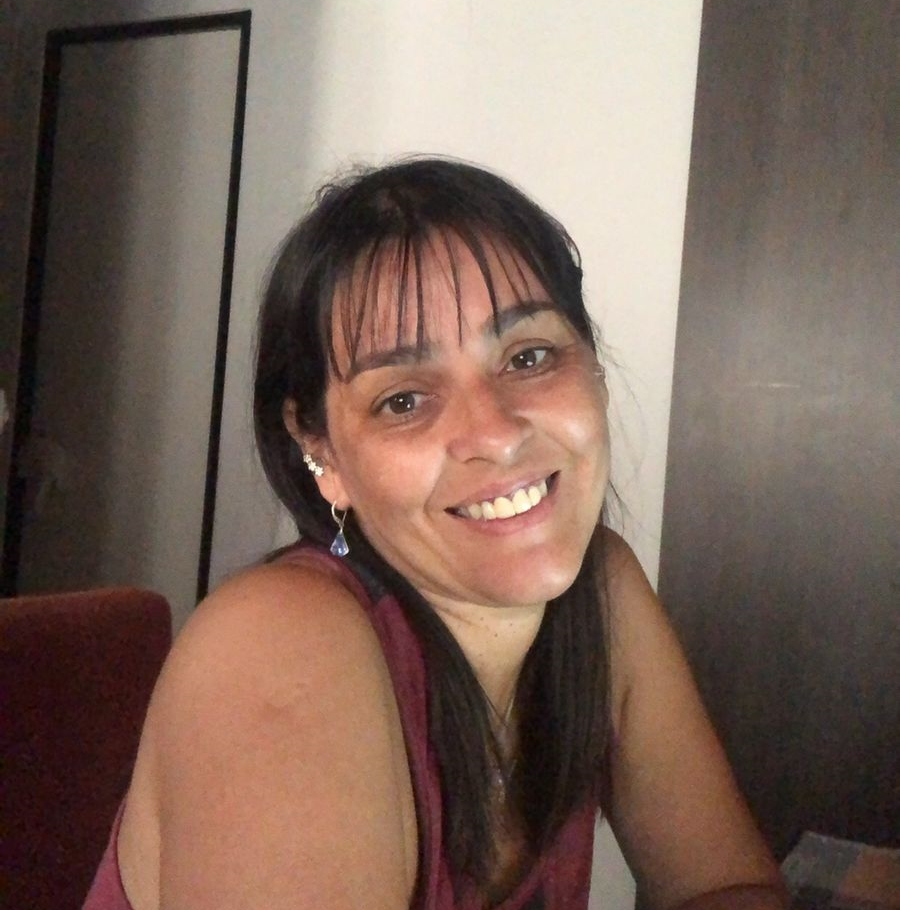

Bienvenidos a mi porfolio web
Mi nombre es Arguello Soledad y construyo paginas web
Soy Estudiante de Desarrollo Web,tengo 45 años, vivo en Argentina y actualmente participo en el proyecto Oracle One en AluraLatam.